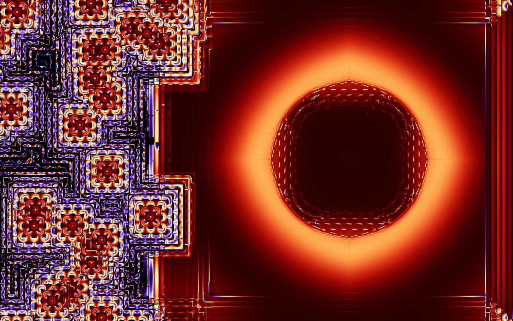
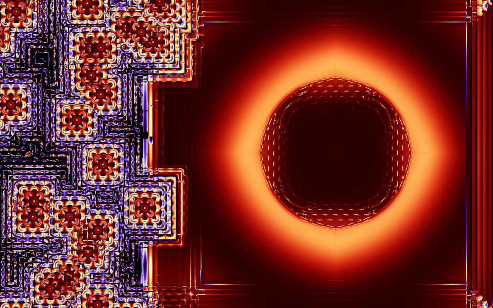

Personal Website
Oct. - Nov. 2022 | html, css, javascript, WebGL
I wasn't familiar with front end programing (nor interested) but I wanted to have a website to display my projects with a little bit more control than github allows. So I decided to make this website.
I made it in roughly 3 weeks since I had to learn html/css and javascript as well as the specificity of WebGL compared to OpenGl 3. The background animation is entirely made with WebGl (and javascript of course). It is definitely far from being perfect and i guess the code could be cleaner (I'm not a javascript expert) but I don't wan't to spend to much time on it. I've also tried to make it work on mobile devices as well. However, the user experience is definitely better on computer (if you are on a mobile, check it out on your computer).
Source CodeSeismic Panic Game
Oct. 1st 2022 | Unity, C#
I made this game with a friend during ludum dare 51 game jam. It was made using Unity in under 24 hours as our participation was a las minute decision (compared to 72 hours usually). We ended up 501st out of 1703 participants.
Ludum dare Play GameMesh tools
Sept. - Oct. 2022 | Rust
I made this program to select some points of a mesh. The goal was to have a fast python module that allow the user to move easily in the scene and select some points of the mesh. It supports two camera mode (absolute position and camera rotation OR fixed look at point). It is possible to switch between those two modes at any time.
Source CodeRustracer
Aug. 2022 | Rust
A basic raytracer implementation(on CPU) I've worked on in order to learn Rust
This raytracer can handle spheres, depth of field and three types of material:
- Lambertian
- Dielectric
- Metalic
While computing the output image, the current state is displayed in a window managed on a different thread.
Source CodeOpenGL
Aug. 2022 | C++, OpenGL, Assimp
I decided to learn openGL this summer. So I made this simple scene with multiple lights and a skybox (a spotlight is "attached" to the camera). It is possible to move into the scene. I've use "Assimp" library to load the ship mesh with it's textures.
Inria Internship
June. - July. 2022 | glsl
During this internship, I made an algorithm that filter a height map to generalise a terrain (see the before/after comparison below).
For that, I used a software called Gratin designed by a member of the team I was in. This software allow to bind nodes. Each node takes some textures in input execute a shader by sampling the texture and output a texture.
I have also worked on giving a "harsher" style to the shadows in order to mimic an artist style (Pierre Novat) whose son was helping the team (This effect can't be seen below).
I've obviously encountered bugs during this internship and one of those was particularly interesting, so I also put it below.
Gratin Repo
 

Raymarching
2019 - 2021
During my "CPGE" (two years of study which act as an intensive preparatory course), I've discovered that I could do things in 3D. Here are some of the projects I've made.
- A scene that can handle multiple lights with different colors as well as reflections in a fragment shader (on shadertoy).
- An atmosphere simulation inspired by rayleight phenomenum (the planet is).


Python projects
2018 - 2021
During my "CPGE" (two years of study which act as an intensive preparatory course), I've made some python programs inspired by the courses.
Here is a list of some of those programs:
- An optimised(as much as python allows it) AES implementation.
- A simulation of a charged particle in a tokamak with and without poloidal correction
- A display of an electrostatic field generated by some charged particles.
- A simple tsunami simulation.
- An epidemic simulation.
- A labyrinth generator.
- A program drawing shapes with moving sphere with constraints.